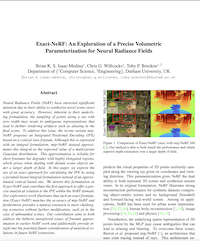

Towards Open-World Object-based Anomaly Detection via Self-Supervised Outlier Synthesis
, B.K.S. Isaac-Medina, Y.F.A. Gaus, N. Bhowmik, T.P. Breckon
Accepted at ECCV 2024
Brian K. S. Isaac-Medina
Durham University
Yona Falinie Abd. Gaus
Durham University
Neelanjan Bhowmik
Durham University
Toby P. Breckon
Durham University
Brian K. S. Isaac-Medina
,
Yona Falinie Abd. Gaus
,
Neelanjan Bhowmik
,
Toby P. Breckon

Paper
Code
404
Page not found :(
The requested page could not be found.